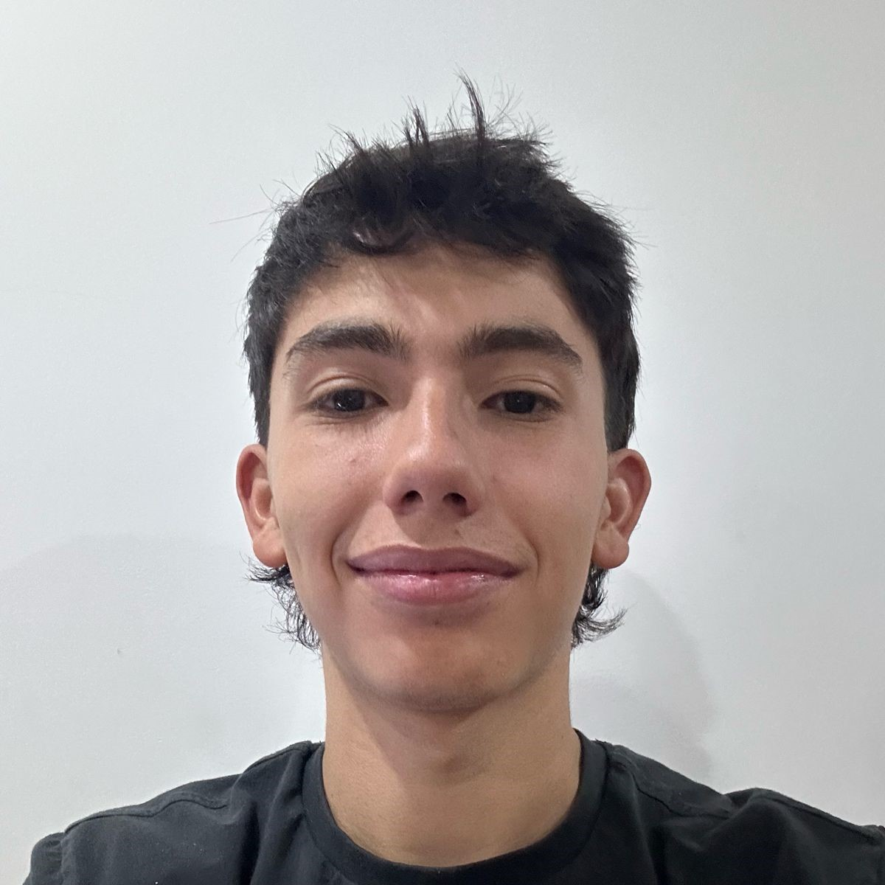
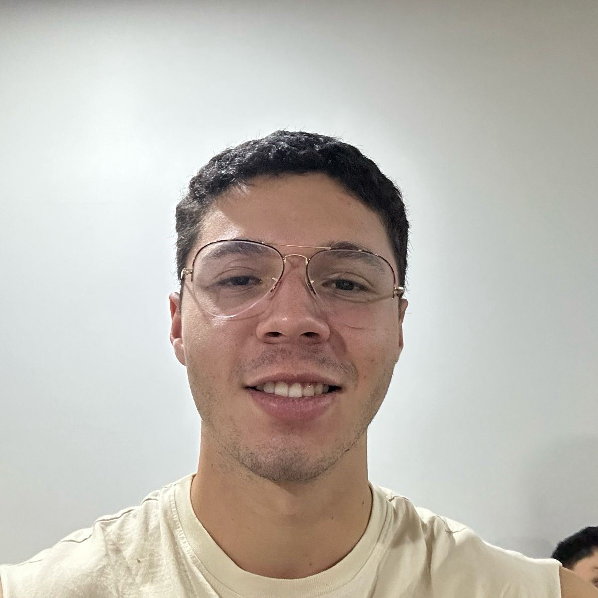

Nuestra historia...
En la ciudad de Bogotá, Andrea, Juanes y Sebastian, amigos de la universidad, compartían la pasión por la cocina venezolana y costeña. Tras años de planificación, abrieron Venecosteños, un restaurante que fusiona los sabores de ambas culturas. Venecosteños se convirtió en un punto de encuentro para amantes de la buena comida y la cultura latinoamericana. Cada plato refleja la autenticidad y el amor por la cocina tradicional, ofreciendo a los comensales una experiencia culinaria inolvidable que transporta a las costas de Venezuela y las playas de la región caribe colombiana.

Juan Esteban Rodríguez
Nació en Villavicencio, Colombia
Andrea Paola Urdaneta
Nació en Mérida, Venezuela

Sebastian Gomez
Nació en Barranquilla, Colombia